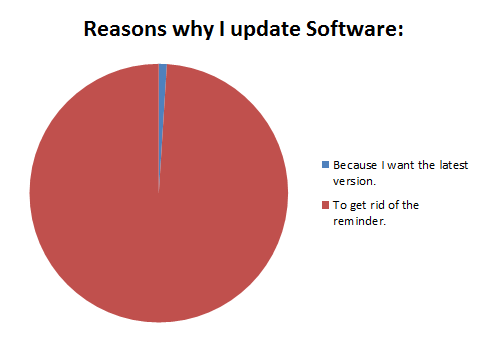
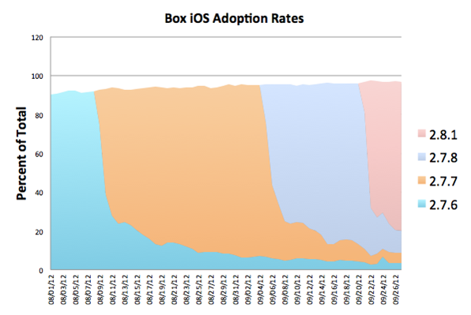
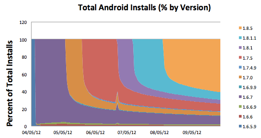
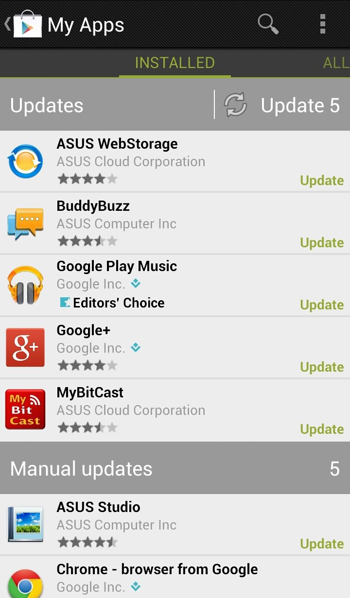

"Release early and release often" is a mantra frequently repeated in the world of software. We've all heard it and the majority of us have embraced it. The advantages are clear: you can sell your product sooner, fix bugs faster, and react more easily to changing requirements.
However, one thing that is sometimes overlooked is how we rely on the web to do this. There are no challenges in pushing updates to the customer because there are no updates to push. Changes happen invisibly for the user - they visit a site and magically have the latest version of an app. In the world of web development, it's actually more painful to not update an app. Setting up staging environments or A/B releases are far more difficult than just updating a live site.
The issue is that these automatic benefits don't apply to mobile. Suddenly, we're back in the old world of needing to push updates to users. Although it's still far easier than it was in the days of desktop software, it isn't as seamless as the web. Users must choose to update your application, and more importantly, they must choose to take the time to update it.
This may sound absurd at first, but on mobile, releasing too often should be a concern. The obvious truth is that updates annoy the hell out of users. They don't want to see updates, they don't want to know what they do, and they certainly don't want to take the time to perform them. Here is an image from a highly voted post on Reddit a few weeks ago:

You can also read some of the comments on how people feel about updating software. Needless to say, most people do not enjoy keeping up with the barrage of updates they receive every week. The important thing to take away from this, is that releasing too often can be detrimental to the user experience.
On mobile, there is also the concern of approval processes. Apple can take up to a couple of weeks to approve an app, same with Amazon. This makes performing daily or weekly releases impossible in a lot of scenarios. Even releasing biweekly would be pushing it.
The problems associated with not releasing enough are more obvious. As with any type of software, releasing too many changes at once will increase the odds of something going wrong. It will also make it more difficult to weed out where new bugs are happening. Instead of sorting through a handful of commits to find a bug, you could potentially have to sort through hundreds.
Not releasing frequently enough also means not being competitive enough. Turnaround time is one of the largest contributing factors to the success of any software project. If you can't keep up with your users' demands, then a competitor will. Even if competition is minimal, people may simply stop using your app because bugs or a lack of features make it not worthwhile.
At Box, we ultimately decided on monthly releases. Releasing weekly or even biweekly put far too much stress on getting through the various approval processes and didn't give users enough time to update. Our analytics have also shown that it typically takes between 2 to 4 weeks for the majority of our userbase to update to a newer version.


What can we take away from this? First, updating more than twice a week would have little effect. Most users won't update and use the app during that small window of time, resulting in a very segregated userbase. For example, say we release version 1, release version 2 a week later, and then release version 3 the week after that. Some users will update from 1 to 2, while others will wait a week and update from 1 to 3. The userbase becomes split three ways because users haven't been given enough time to settle on any one version. This means bugs can be reproduced on any number of different versions, and any external components (such as web services) need to remain compatible with various versions.
Also notice that toward the end of these graphs, nearly half of total users are running an older version. Most users will be holdouts and not want to update, probably because they don't want to take the time to do so. Releasing more often will just segregate your userbase further. One of the ideas behind releasing early and often, is that bugs can be fixed quickly with the next release. This isn't necessarily possible when half of your users refuse to click the update button to get the next release.
Another important consideration is that updates aren't sequential. If a user is running version 1 and hits update, they will jump immediately to version 3. This requires developers to be aware of any issues that could happen between updates for any version. Things like preferences and SQLite databases become a major pain to maintain.
Granted, these statistics are specific to the Box app so they make sense in justifying our monthly release schedule. It'd be interesting to hear about stats from other apps or to see them for the Android/iOS market as a whole.
I'm not entirely certain why Android and iOS don't make updates transparent and automatic. On iOS, it is impossible to perform any sort of automatic updating. On Android, it's possible to update automatically and disable update notifications, but it isn't the default.
The fact is, there really isn't a reason why a user wouldn't want to update. The web has made it abundantly clear that most of the time users don't even notice when the app they're using has changed. Google Chrome is a perfect example of this. As I'm writing this, I'm using version 25 of Chrome. I have not once seen an update message, and most of the time I don't even notice it updated.
Another point is that the majority of users don't read changelogs. They'll either click the update button to get rid of the message, or they'll dismiss it entirely. Very rarely will someone read through a change log and weigh the option of wanting to update, so why not just update automatically for them?
The one exception to the automatic update rule is permission changes. If an update requires additional permissions, then the user should be forced to intervene. This is a rule that's already followed by Android's auto-updating. Other than that, make updates automatic. It will make the lives of developers easier and prevent users from shooting themselves in the foot by missing critical feature and security updates.